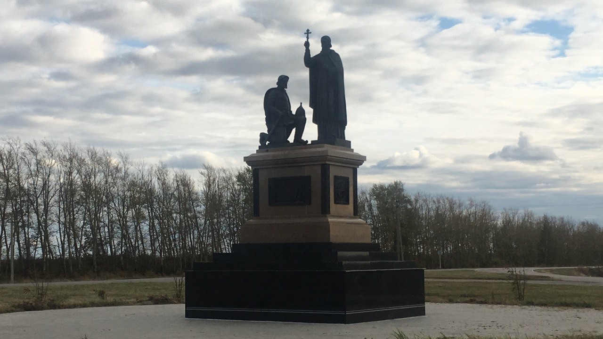

Скульптура
Скульптурная композиция
Двухфигурная скульптурная композиция на постаменте под открытым небом. Рядом со стоящей фигурой, держащей крест, расположена коленопреклонённая фигура.
Скульптура / Две фигуры
Персональные роли участников в этом кейсе не уточнены.
Материалы проекта
1 фото · 0 видео. Видео запускается только вручную.
